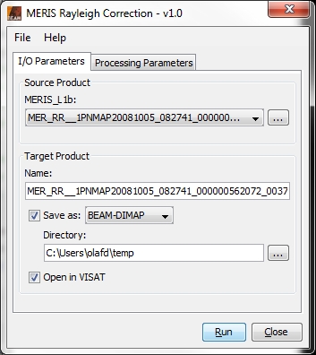
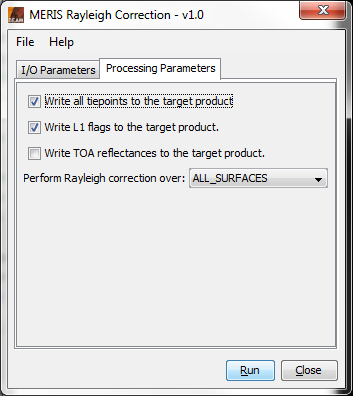
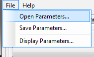
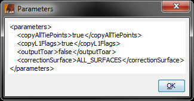
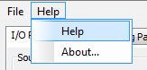
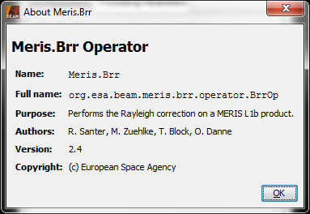
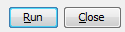
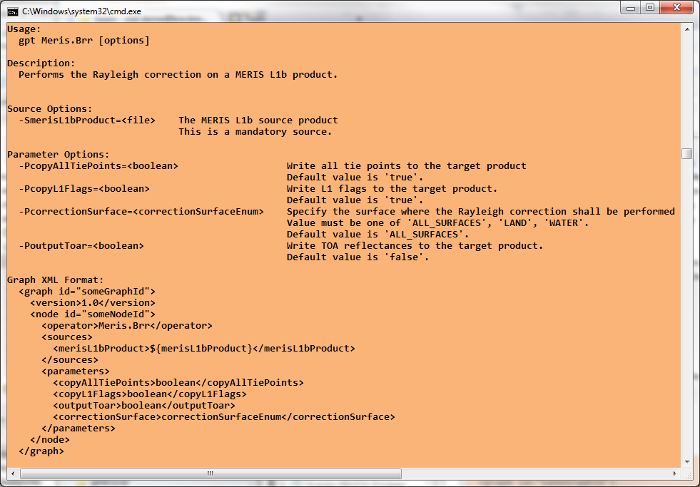
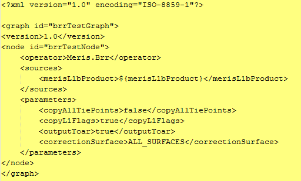

| MERIS BRR Processing |
|
The BRR Processing Tool can be invoked from the VISAT tool menu by selecting
the Compute Rayleigh correction from a MERIS L1b product... entry, or in batch mode by using the command line
tool gpt (Graph Processing Tool) which is located
in the BEAM bin directory.
Selecting the Compute Rayleigh correction from a MERIS L1b product... entry from the VISAT tool menu pops up the following dialog:

MERIS_L1b: Here the user specifies the MERIS L1b source product. The combo box presents a list of all products open in VISAT. The user may select one of these or, by clicking on the button next to the combo box, choose a product from the file system.
Name: Used to specify the name of the target product.
Save to: Used to specify whether the target product should be saved to the file system. The combo box presents a list of file formats, currently BEAM-DIMAP, GeoTIFF, and HDF5.
Open in VISAT: Used to specify whether the target product should be opened in VISAT. When the the target product is not saved, it is opened in VISAT automatically.
Selecting the Processing Parameters tab in the MERIS BRR Processing Dialog switches to the following view:

Write all tie points to the target product: This checkbox indicates if all MERIS tie points shall be written to the target product. If not selected, only latitude and longitude tie point grids will be written.
Write all L1 flags to the target product: This checkbox indicates if the MERIS L1 flags shall be written to the target product.
Write TOA reflectances to the target product: This checkbox indicates if the TOA reflectances (not Rayleigh corrected) shall also be written to the target product.
Perform Rayleigh correction over: From this drop-down menu, the user can select the surface where the Rayleigh correction shall be performed (over all surfaces, only over water, or only over land). .
Selecting the File entry in the Menu Bar opens the following view:

Open Parameters...: When this entry is selected, an 'Open File' dialog will appear. Here, a BEAM GPF parameters XML file can be selected, containing MERIS BRR processing parameters which were saved earlier. These parameters will be loaded and applied for an upcoming processing.
Save Parameters...: When this entry is selected, a 'Save File' dialog will appear. Here, the current set of MERIS BRR processing parameters can be saved into a BEAM GPF parameters XML file for later re-usage.
Display Parameters...: When this entry is selected, the current set of MERIS BRR processing parameters will be displayed in XML format (see below).

Selecting the Help entry in the Menu Bar opens the following view:

Help: When this entry is selected, this online help is opened in a separate window.
About...: When this entry is selected, an 'About' dialog for the current processor is opened (see below).


Run: When this button is clicked, the processing will be started with the selected parameters.
Close: When this button is clicked, the processor toolwindow will be closed.

